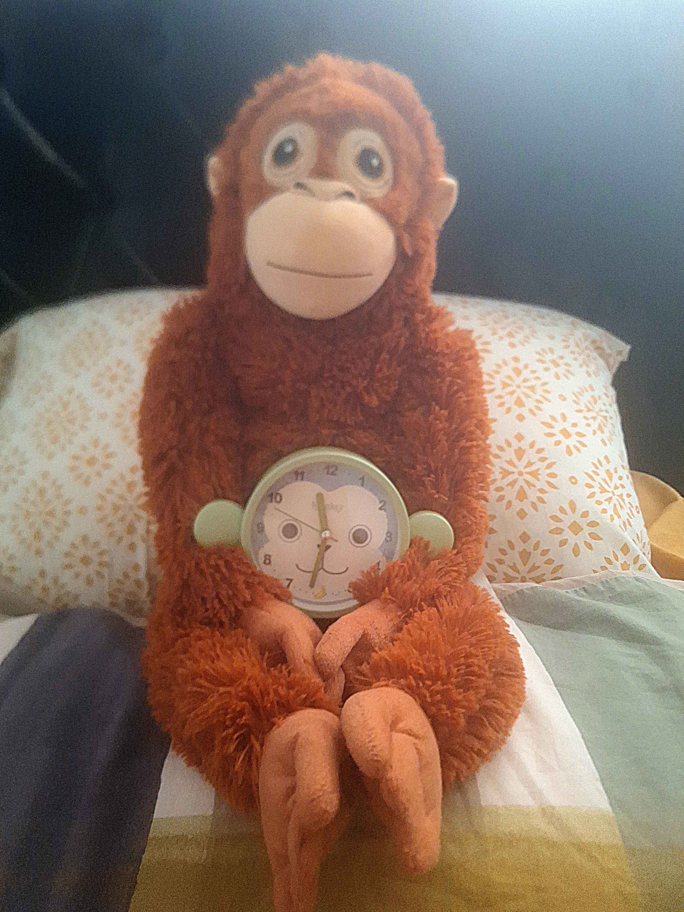
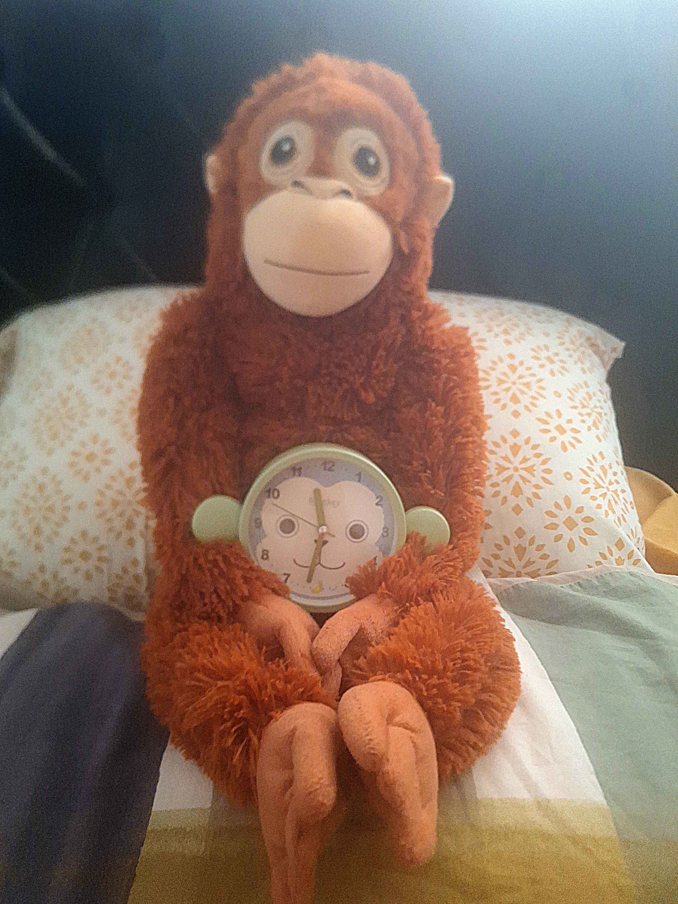

Who am I?
My name is Ash, I'm 25 years old, and I am an aspiring software engineer.
While I was studying physics at UCL, I learned Python as part of PHAS0030
to model the orbits of planets. I became interested in pursuing coding further
once I left, since the process of constant problem-solving appealed to me greatly.
Below is a simple model of our solar system, coded in Javascript rather than Python. The relative
speeds of the planets are true to life, which is why it seems like Neptune is hardly moving.
By the time Neptune makes a single revolution, Mercury will have made approximately 680 trips around the Sun.
I like to bake cakes. Here's one I made for a Christmas party a few years back, near the start of my baking journey.

I adore apes and monkeys alike. Here's some pictures I took at Monkey World, along with a bonus picture of the monkey paraphrenalia I have at home.


 
